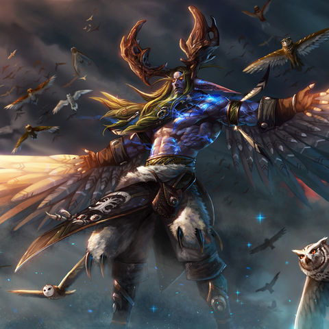

Малфурион Ярость Бури - ночной эльф, сильнейший и первый из друидов, брат-близнец Иллидана. Втроём с Тирандой Шелест Ветра они учились у полубога Кенария друидизму, но лишь Малфурион принял учения близко к сердцу. Иллидан предпочёл могущественную магию Колодца Вечности, а Тиранда стала жрицей богини Элуны. Таким образом, Малфурион стал первым друидом.
Во время Войны Древних Малфурион был одним из немногих знавших, что королева Азшара предала их. Под конец войны он вместе с гостями из будущего Ронином и Красом закрыл портал в Круговерть Пустоты, через который в Азерот намеревался проникнуть Саргерас. Это вызвало Великий Раскол, разбив единый континент Калимдор на три части: Калимдор, Восточные королевства и Нордскол. Малфурион стал учителем других ночных эльфов в пути друидизма, в основном мужчин. Для поддержания вездесущего бдения за возможным прибытием Легиона, Малфурион и другие друиды погрузились в Изумрудный Сон. Его возлюбленная Тиранда осталась духовным лидером ночных эльфов.
Малфурион добился значительного прогресса в своей учебе перед тем, как его стало атаковать беспокойное видение: Высокорожденные злоупотребляли магией Источника Вечности. Видение твердо убедило его в том, что королева Азшара и ее высокопоставленные заклинатели вызовут катастрофу, если никто не вмешается. Ночной эльф поделился своими заботами с Кенарием, который был тоже сильно обеспокоен.
Даже при этом ночные эльфы слишком поздно осознали, что происходило. Демоны повалили из королевского дворца и начали уничтожать все на своем пути. Началась Война Древних.
Иллидан быстро получил высокие полномочия благодаря своему мастерству в мистической магии. Даже при этом он все больше хмурился и был недоволен по ходу войны. Однажды он внезапно покинул войско ночных эльфов и перешел на сторону Пылающего Легиона. Позже Иллидан снова присоединился к защитникам ночных эльфов, заявляя, что он с самого начала планировал обмануть Легион. Однако Малфурион и многие другие ночные эльфы с тех пор всегда сомневались в его верности.
Тем временем Кенарий обучил Малфуриона всем премудростям друидизма и отправился на поиски других полубогов Азерота. Он доказывал им, что они несут ответственность за спасение Азерота от Легиона, но полубоги не привыкли работать вместе. В результате Кенарию пришлось долго убеждать их, пока они наконец не отправились на фронт. Лидер армии ночных эльфов, капитан Малорн врезался в битву и отбросил нападавших на его сына несколькими взмахами своих огромных рогов.
Подоспели ночные эльфы и унесли бессознательного Кенария в безопасное место. Какое-то время Малорн легко сдерживал демонов. Тут Архимонд включился в битву и вступил в бой с гигантским оленем один на один, в конце концов свернув Малорну шею. Разьяренный и убитый горем, Малфурион вызвал корни из земли, чтобы атаковать повелителя демонов. Когда растения усилили свою хватку на массивном теле демона, Архимонду пришлось телепортироваться подальше, чтобы спастись.
Стая Изеры помогла Кенарию войти в Изумрудный Сон, где зеленые драконы занялись его ранами. В это время ночные эльфы продолжали сражаться. Малфурион играл ключевую роль в закрытии портала, который Высокорожденные открыли над Колодцем Вечности, тем самым не позволив Саргерасу, темному титану войти в Азерот.
Магией Источника в течение войны сильно злоупотребляли, и закрытие портала вызвало слишком большое напряжение. Источник взорвался, вызвав Великий Разлом. Древний Калимдор разорвало на несколько континентов, и был рожден новый океан. Его холодные волны преследовали выживших ночных эльфов и их союзников всю дорогу до Горы Хиджал, и только тогда схлынули.
Уставшие беженцы расположились на отдых и занялись лечением своих ран. Только Иллидан сразу же отправился на разведку местности, быстро обнаружил озеро и трансформировал его в новый Источник Вечности. Маленькая группа ночных эльфов застала его за этим, и Иллидан атаковал их. К счастью, Малфурион прибыл почти сразу же и пленил своего брата.
Иллидан предсказывал, что однажды демоны вернутся в Азерот, и заявлял, что мистическая магия — единственное эффективное средство против них. Однако Малфурион опасался, что так называемый альтруизм Иллидана на самом деле скрывал другой мотив: Иллидан жаждал магии и мало задумывался о последствиях. Вынести наказание Иллидану Джерод предоставил Малфуриону, который считал верхом глупости оставить Иллидана на свободе и позволить продолжать безрассудные поиски силы. Поэтому с помощью Кенария Малфурион заточил Иллидана в большой подземной тюрьме, где тот должен был оставаться закованным и бессильным до конца времен.Биография
Война Древних
Ужас из глубин